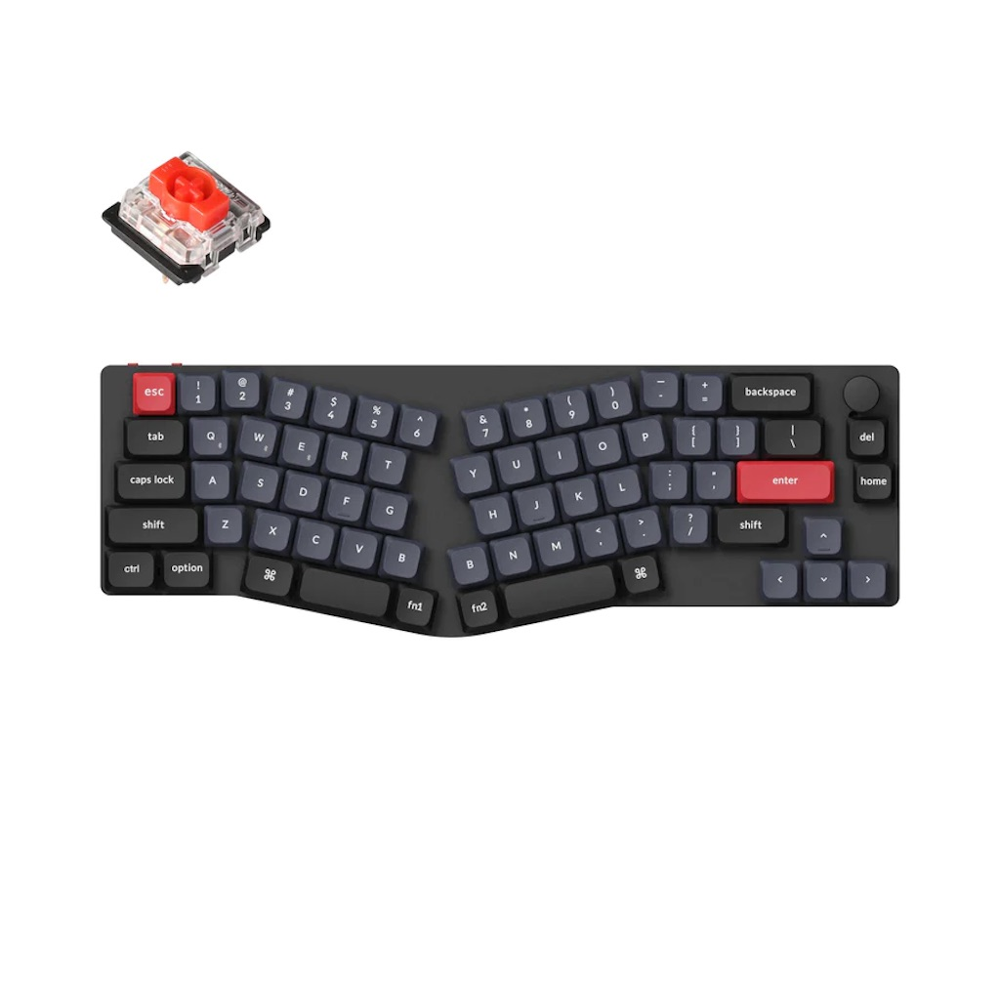

https://www.keychron.com/products/keychron-k11-pro-alice-layout-qmk-via-wireless-custom-mechanical-keyboard

大岡さんのブログ記事で知ったのだけど、こうして様々なタイプを売り出してくれるのがKeychronのすごいところだと思う。
そして大岡さんが書いているように、親指シフトのレイアウトをファームウェアに書き込んであげるサービスは普通にアリなんじゃないかな。使いたい新配列がセットアップ済みのキーボードを買える時代がついにやってくるのかもしれない。